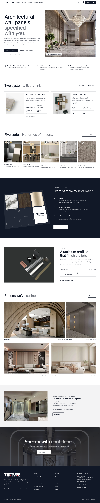
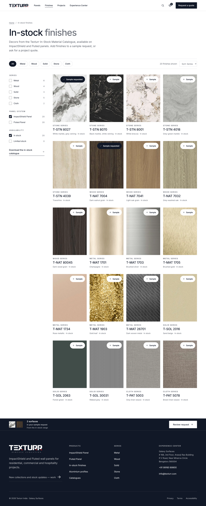
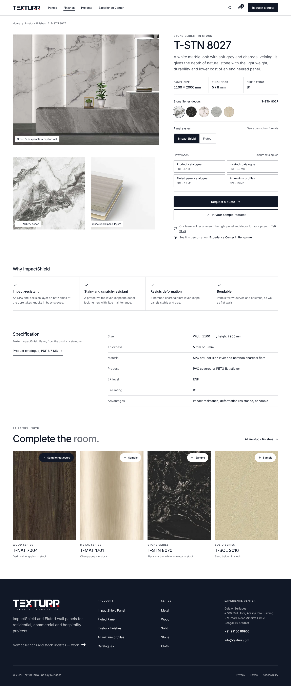
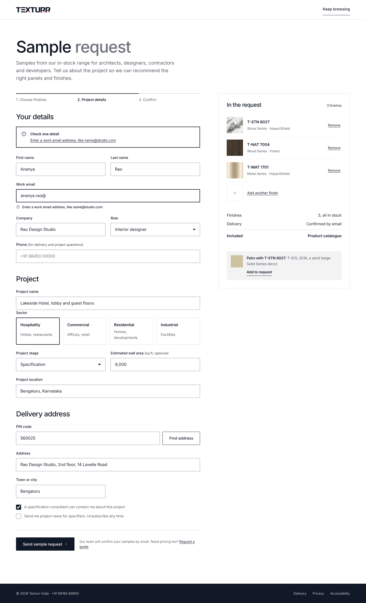
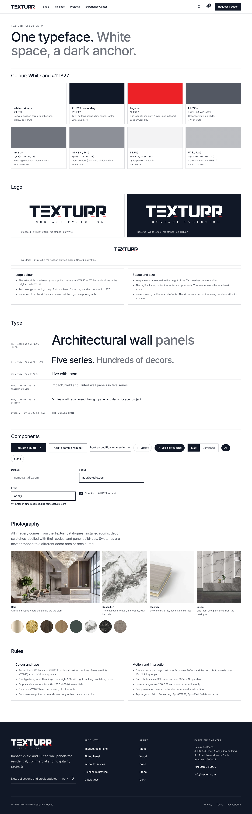

01HomePanels, series, profiles, Experience Center
02In-stock finishes20 decors by series
03Decor pageT-STN 8027, ImpactShield spec
04Sample requestProject details
05Design systemColour, type, components